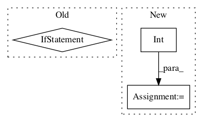

534c4dc7423681faab78d1829c1ec3c31ffb8330,niftynet/layer/resampler.py,ResamplerLayer,_resample_inv_dst_weighting,#ResamplerLayer#Any#Any#,319
Before Change
try:
batch_size = int(in_size[0])
in_spatial_rank = infer_spatial_rank(inputs)
if not partial_shape:
in_spatial_size = in_size.as_list()[1:-1]
except (TypeError, AssertionError, ValueError):
tf.logging.fatal("Unknown input shape, at least batch size "
"and rank of the inputs are required.")
raiseAfter Change
partial_shape = not in_size.is_fully_defined()
try:
batch_size = int(in_size[0])
n_coords = int(sample_coords.shape[0])
in_spatial_rank = infer_spatial_rank(inputs)
in_spatial_size = \
None if partial_shape else in_size.as_list()[1:-1]
except (TypeError, AssertionError, ValueError):In pattern: SUPERPATTERN
Frequency: 3
Non-data size: 3
Instances Project Name: NifTK/NiftyNet
Commit Name: 534c4dc7423681faab78d1829c1ec3c31ffb8330
Time:
Author: null
File Name: niftynet/layer/resampler.py
Class Name: ResamplerLayer
Method Name: _resample_inv_dst_weighting
Project Name: NifTK/NiftyNet
Commit Name: 5f3d7eb543310174c83c8cb3d42a7a28a4260f8e
Time:
Author: null
File Name: niftynet/layer/layer_util.py
Class Name:
Method Name: expand_spatial_params
Project Name: shenweichen/DeepCTR
Commit Name: 4a7675cec337cf92683e3d5d3e3659fe4e7b0f8d
Time:
Author: null
File Name: deepctr/layers/utils.py
Class Name: Linear
Method Name: build